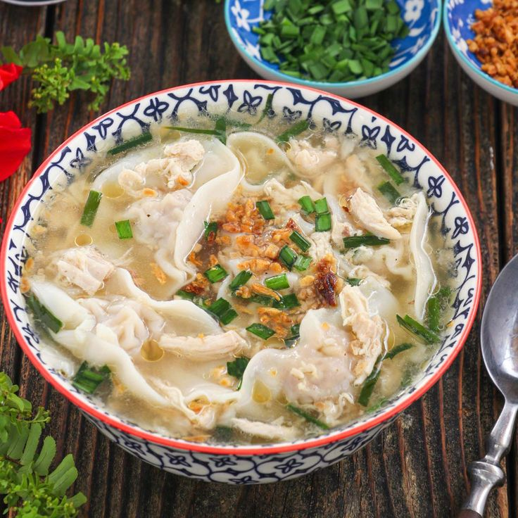

Dumpling dreams and noodle delights! ü•ü‚ù§Ô∏è #PancitMolo
Pancit Molo is a unique and beloved dish that hails from the town of Molo in Iloilo, Philippines. Unlike most pancit dishes, which are typically associated with stir-fried noodles, Pancit Molo is actually a hearty, flavorful soup. What makes it stand out is the use of delicate, handmade wonton wrappers filled with a savory mixture of minced pork, shrimp, and a blend of spices. Each bite of these tender wontons delivers a burst of rich flavors, creating a satisfying balance between the soft, succulent filling and the tender, chewy wrapper. The broth in Pancit Molo is another highlight of the dish. Made by simmering pork bones, it develops a deep, savory taste that serves as the perfect base for the wontons. The broth is typically seasoned with garlic, onions, and ginger, adding an aromatic depth to its flavor profile. The resulting soup is clear, light, yet incredibly flavorful—each sip warming both the body and the soul. This broth, slow-cooked to perfection, ensures that every spoonful delivers a rich and comforting taste. What truly sets Pancit Molo apart from other Filipino dishes is not just its delicious taste but also its thoughtful presentation. Served piping hot, the dish is often garnished with chopped green onions for a fresh, vibrant finish. A sprinkle of crispy fried garlic is added on top, giving the soup an extra layer of texture and a hint of crunch that contrasts beautifully with the soft wontons. For those who want to elevate the flavor even further, Pancit Molo is commonly enjoyed with a squeeze of lime or calamansi, adding a touch of citrusy brightness that complements the savory broth.